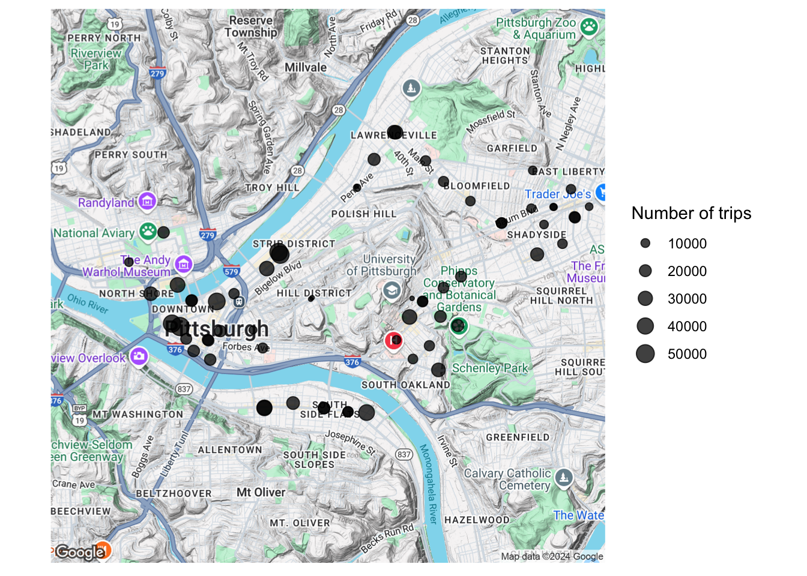
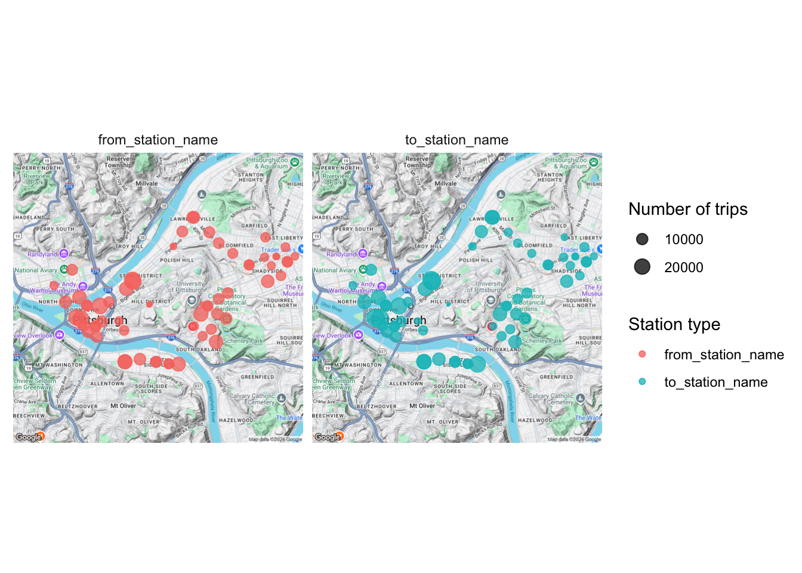
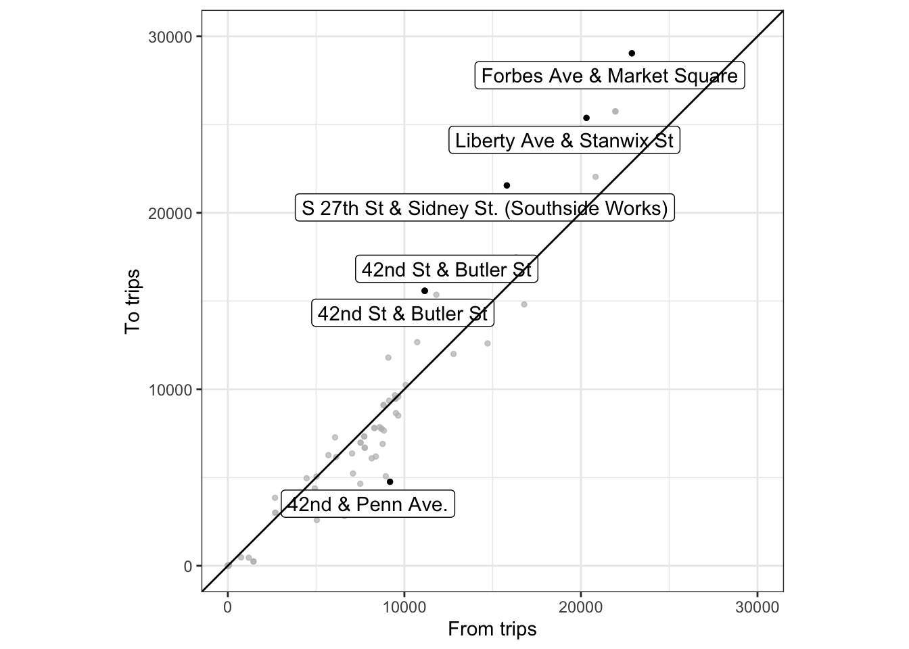
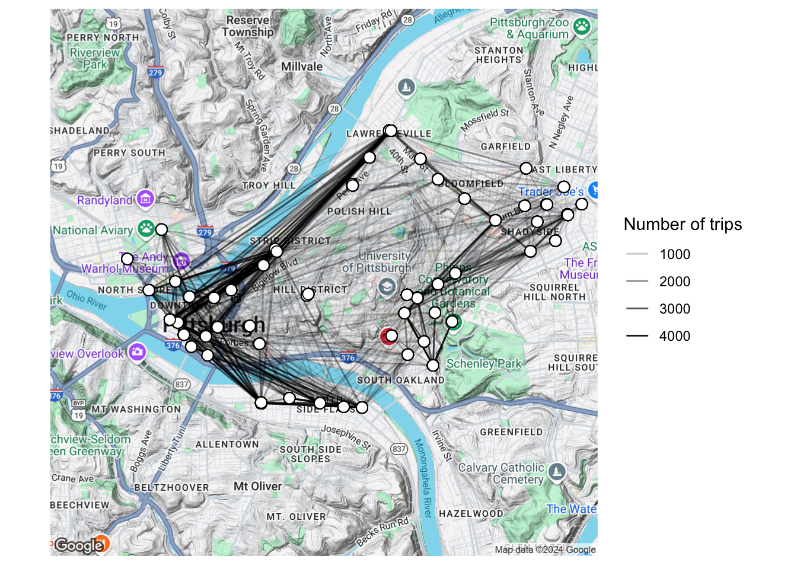
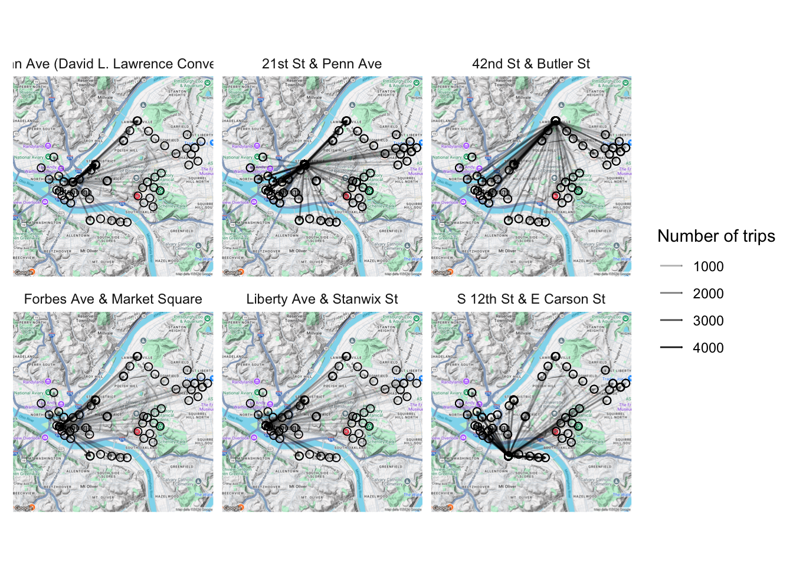
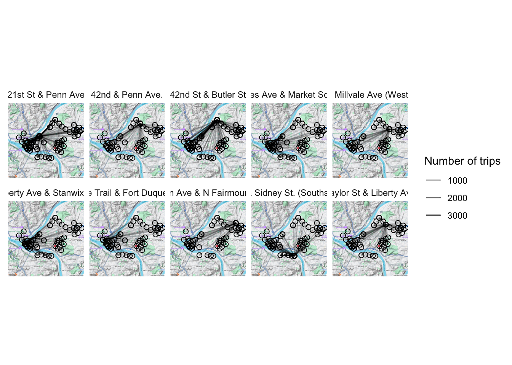
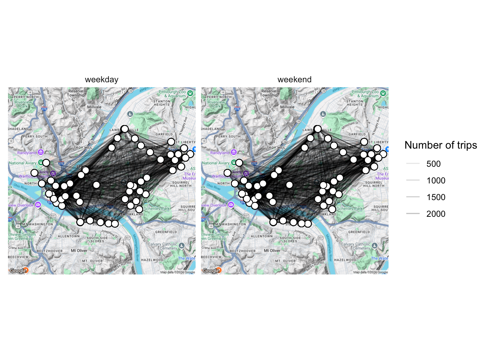
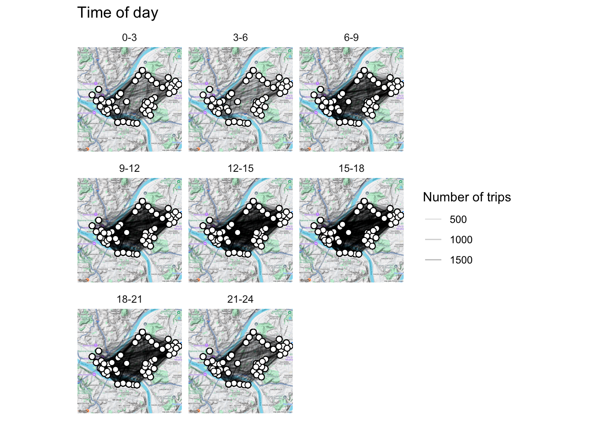

library(tidyverse)
library(ggmap)
library(lubridate)
library(viridis)
library(stringr)
library(gghighlight)
library(knitr)
library(kableExtra)This post is about mapping the Healthy Ride dataset in R.
This is my third post about the Healthy Ride bike service in Pittsburgh. You can find the first post and second post on my blog.
First, load the R packages we will be using:
Then load the data from the WPRDC (hosted on my GitHub page):
data <- read_csv("https://raw.githubusercontent.com/conorotompkins/healthy_ride/master/data/data.csv")Again, we need to format the data and the column names to make them more useful for analysis. Since this is a repeat of the script from the last post, I will just do it all in one go:
colnames(data) <- tolower(colnames(data))
colnames(data) <- gsub(" ", "_", colnames(data))
data_long <- data %>%
rename(start_date_time = starttime,
stop_date_time = stoptime) %>%
gather(date_time_type, date_time, c(start_date_time, stop_date_time)) %>%
select(date_time_type, date_time, everything()) %>%
mutate(date_time_2 = date_time) %>%
separate(date_time, " ", into = c("date", "time")) %>%
mutate(id = row_number(),
date = mdy(date),
year = year(date),
month = month(date, label = TRUE),
week = week(date),
time = hm(time),
hour = hour(time),
wday = wday(date, label = TRUE),
is_weekday = ifelse(wday %in% c("Mon", "Tues", "Wed", "Thurs", "Fri"), "weekday", "weekend"),
yday = yday(date),
mday = mday(date)) %>%
mutate(trip_duration = (tripduration / 60) / 60) %>%
gather(station_id_type, station_id, c(from_station_id, to_station_id)) %>%
gather(station_name_type, station_name, c(from_station_name, to_station_name)) %>%
select(date_time_type,
is_weekday,
date,
year,
month,
hour,
wday,
yday,
mday,
date_time_2,
station_id_type,
station_id,
station_name_type,
station_name,
everything(),
-time)
data_long[1:10, 1:5] %>%
kable("html") %>%
kable_styling(bootstrap_options = c("striped", "hover", "condensed", "responsive"))| date_time_type | is_weekday | date | year | month |
|---|---|---|---|---|
| start_date_time | weekend | 2015-05-31 | 2015 | May |
| start_date_time | weekend | 2015-05-31 | 2015 | May |
| start_date_time | weekend | 2015-05-31 | 2015 | May |
| start_date_time | weekend | 2015-05-31 | 2015 | May |
| start_date_time | weekend | 2015-05-31 | 2015 | May |
| start_date_time | weekend | 2015-05-31 | 2015 | May |
| start_date_time | weekend | 2015-05-31 | 2015 | May |
| start_date_time | weekend | 2015-05-31 | 2015 | May |
| start_date_time | weekend | 2015-05-31 | 2015 | May |
| start_date_time | weekend | 2015-05-31 | 2015 | May |
Importantly, we will be excluding trips where the rider started and ended their trip at the same station. The data lacks the granularity to analyze rider location beyond the points where they began and ended their trip.
data_long <- data_long %>%
spread(station_name_type, station_name) %>%
filter(from_station_name != to_station_name) %>%
gather(station_name_type, station_name, c(from_station_name, to_station_name))
data_long[1:10, 1:5] %>%
kable("html") %>%
kable_styling(bootstrap_options = c("striped", "hover", "condensed", "responsive"))| date_time_type | is_weekday | date | year | month |
|---|---|---|---|---|
| start_date_time | weekend | 2015-05-31 | 2015 | May |
| start_date_time | weekend | 2015-05-31 | 2015 | May |
| start_date_time | weekend | 2015-05-31 | 2015 | May |
| start_date_time | weekend | 2015-05-31 | 2015 | May |
| start_date_time | weekend | 2015-05-31 | 2015 | May |
| start_date_time | weekend | 2015-05-31 | 2015 | May |
| start_date_time | weekend | 2015-05-31 | 2015 | May |
| start_date_time | weekend | 2015-05-31 | 2015 | May |
| start_date_time | weekend | 2015-05-31 | 2015 | May |
| start_date_time | weekend | 2015-05-31 | 2015 | May |
We also need to load the CSV with the longitude and latitude for the Healthy Ride stations
data_station_locations <- read_csv("https://raw.githubusercontent.com/conorotompkins/healthy_ride/master/data/stations/station_locations.csv")df_station_totals <- data_long %>%
group_by(station_name) %>%
summarize(number_of_trips = n()) %>%
arrange(desc(number_of_trips), station_name) %>%
left_join(data_station_locations) %>%
select(station_name, number_of_trips, longitude, latitude)
df_station_totals %>%
head() %>%
kable("html") %>%
kable_styling(bootstrap_options = c("striped", "hover", "condensed", "responsive"))| station_name | number_of_trips | longitude | latitude |
|---|---|---|---|
| Forbes Ave & Market Square | 51924 | -80.00308 | 40.44088 |
| 21st St & Penn Ave | 47700 | -79.98354 | 40.45212 |
| 21st St & Penn Ave | 47700 | -79.98322 | 40.45174 |
| Liberty Ave & Stanwix St | 45692 | -80.00468 | 40.44133 |
| 10th St & Penn Ave (David L. Lawrence Convention Center) | 42868 | -79.99580 | 40.44467 |
| S 27th St & Sidney St. (Southside Works) | 37356 | -79.96611 | 40.42790 |
Where are the Healthy Ride Stations?
pgh_map <- get_map(c(lon = -79.973859, lat = 40.447095), zoom = 13)
pgh_map <- ggmap(pgh_map)
pgh_map +
geom_point(data = df_station_totals, aes(longitude, latitude, size = number_of_trips),
alpha = .75) +
scale_size_continuous("Number of trips", range = c(.1, 5)) +
theme_minimal() +
theme(axis.text = element_blank(),
axis.title = element_blank())
Next, join the two dataframes:
df_long <- data_long %>%
select(station_name, station_name_type) %>%
group_by(station_name, station_name_type) %>%
summarize(number_of_trips = n()) %>%
arrange(desc(number_of_trips)) %>%
left_join(data_station_locations) %>%
ungroup()
df_long %>%
head() %>%
kable("html") %>%
kable_styling(bootstrap_options = c("striped", "hover", "condensed", "responsive"))| station_name | station_name_type | number_of_trips | station_number | number_of_racks | latitude | longitude |
|---|---|---|---|---|---|---|
| Forbes Ave & Market Square | to_station_name | 29040 | 1001 | 19 | 40.44088 | -80.00308 |
| 21st St & Penn Ave | to_station_name | 25748 | 1017 | 19 | 40.45212 | -79.98354 |
| 21st St & Penn Ave | to_station_name | 25748 | 1017 | 18 | 40.45174 | -79.98322 |
| Liberty Ave & Stanwix St | to_station_name | 25380 | 1000 | 16 | 40.44133 | -80.00468 |
| Forbes Ave & Market Square | from_station_name | 22884 | 1001 | 19 | 40.44088 | -80.00308 |
| 10th St & Penn Ave (David L. Lawrence Convention Center) | to_station_name | 22040 | 1010 | 15 | 40.44467 | -79.99580 |
Do some stations function more as starting points or ending points for trips?
pgh_map +
geom_point(data = df_long, aes(longitude, latitude, size = number_of_trips, color = station_name_type),
alpha = .75) +
scale_size_continuous("Number of trips",range = c(.1, 5)) +
scale_color_discrete("Station type") +
facet_wrap(~station_name_type) +
theme_minimal() +
theme(axis.text = element_blank(),
axis.title = element_blank())
No differences are discernible in this view.
A scatter plot shows the differences more effectively:
df_from_to <- df_long %>%
spread(station_name_type, number_of_trips) %>%
rename(from_trips = from_station_name,
to_trips = to_station_name) %>%
select(station_name, from_trips, to_trips) %>%
mutate(differential = abs(from_trips - to_trips))
df_from_to %>%
ggplot(aes(from_trips, to_trips)) +
geom_point(size = 1) +
gghighlight(label_key = station_name,
differential > 4000) +
scale_x_continuous(limits = c(0, 30000)) +
scale_y_continuous(limits = c(0, 30000)) +
coord_equal() +
geom_abline() +
labs(x = "From trips",
y = "To trips") +
theme_bw()
What are the top 10 stations in terms of absolute difference between departures and arrivals?
df_from_to %>%
ungroup() %>%
arrange(desc(differential)) %>%
top_n(10, differential) %>%
kable("html") %>%
kable_styling(bootstrap_options = c("striped", "hover", "condensed", "responsive"))| station_name | from_trips | to_trips | differential |
|---|---|---|---|
| Forbes Ave & Market Square | 22884 | 29040 | 6156 |
| S 27th St & Sidney St. (Southside Works) | 15804 | 21552 | 5748 |
| Liberty Ave & Stanwix St | 20312 | 25380 | 5068 |
| 42nd St & Butler St | 11152 | 15580 | 4428 |
| 42nd St & Butler St | 11152 | 15580 | 4428 |
| 42nd & Penn Ave. | 9184 | 4760 | 4424 |
| Taylor St & Liberty Ave | 8948 | 5072 | 3876 |
| 21st St & Penn Ave | 21952 | 25748 | 3796 |
| 21st St & Penn Ave | 21952 | 25748 | 3796 |
| Penn Ave & N Fairmount St | 6604 | 2816 | 3788 |
Let’s map the connections between stations by drawing lines between the stations.
First, widen the data:
df_wide <- data_long %>%
spread(station_name_type, station_name) %>%
select(from_station_name, to_station_name) %>%
left_join(data_station_locations, by = c("from_station_name" = "station_name")) %>%
rename(from_latitude = latitude,
from_longitude = longitude) %>%
left_join(data_station_locations, by = c("to_station_name" = "station_name")) %>%
rename(to_latitude = latitude,
to_longitude = longitude) %>%
group_by(from_station_name, to_station_name, from_longitude, from_latitude, to_longitude, to_latitude) %>%
summarise(number_of_trips = n()) %>%
arrange(desc(number_of_trips)) %>%
mutate(from_station_type = ifelse(from_station_name == to_station_name,
"Same station", "Different station"))
df_wide %>%
head() %>%
kable("html") %>%
kable_styling(bootstrap_options = c("striped", "hover", "condensed", "responsive"))| from_station_name | to_station_name | from_longitude | from_latitude | to_longitude | to_latitude | number_of_trips | from_station_type |
|---|---|---|---|---|---|---|---|
| 10th St & Penn Ave (David L. Lawrence Convention Center) | 21st St & Penn Ave | -79.99580 | 40.44467 | -79.98354 | 40.45212 | 4432 | Different station |
| 10th St & Penn Ave (David L. Lawrence Convention Center) | 21st St & Penn Ave | -79.99580 | 40.44467 | -79.98322 | 40.45174 | 4432 | Different station |
| Boulevard of the Allies & Parkview Ave | Fifth Ave & S Bouquet St | -79.95188 | 40.43434 | -79.95760 | 40.44232 | 3888 | Different station |
| 21st St & Penn Ave | 10th St & Penn Ave (David L. Lawrence Convention Center) | -79.98354 | 40.45212 | -79.99580 | 40.44467 | 3640 | Different station |
| 21st St & Penn Ave | 10th St & Penn Ave (David L. Lawrence Convention Center) | -79.98322 | 40.45174 | -79.99580 | 40.44467 | 3640 | Different station |
| Fifth Ave & S Bouquet St | Boulevard of the Allies & Parkview Ave | -79.95760 | 40.44232 | -79.95188 | 40.43434 | 3560 | Different station |
Then, layer the data over the map:
pgh_map +
geom_segment(data = df_wide, aes(x = from_longitude, xend = to_longitude,
y = from_latitude, yend = to_latitude,
alpha = number_of_trips)) +
geom_point(data = df_wide, aes(from_longitude, from_latitude), shape = 21, size = 3, fill = "white") +
geom_point(data = df_wide, aes(to_longitude, to_latitude), shape = 21, size = 3, fill = "white") +
scale_alpha_continuous("Number of trips", range = c(.0001, 1)) +
theme_minimal() +
theme(axis.text = element_blank(),
axis.title = element_blank())
We can also facet by the from_station_name variable to see where trips originating from certain stations end at. This plot shows the top 6 stations in terms of trips that began from that station:
top_from_stations <- df_wide %>%
group_by(from_station_name) %>%
summarize(number_of_trips = sum(number_of_trips)) %>%
arrange(desc(number_of_trips)) %>%
top_n(6) %>%
select(from_station_name) %>%
unlist()
df_wide_specific_station <- df_wide %>%
filter(from_station_name %in% top_from_stations)
pgh_map +
geom_segment(data = df_wide_specific_station, aes(x = from_longitude, xend = to_longitude,
y = from_latitude, yend = to_latitude,
alpha = number_of_trips), arrow = arrow(length = unit(0.03, "npc"))) +
geom_point(data = df_wide_specific_station, aes(from_longitude, from_latitude),
shape = 1, size = 2) +
geom_point(data = df_wide_specific_station, aes(to_longitude, to_latitude),
shape = 1, size = 2) +
scale_alpha_continuous("Number of trips", range = c(.1, 1)) +
facet_wrap(~from_station_name,
nrow = 2) +
theme_minimal() +
theme(axis.text = element_blank(),
axis.title = element_blank())
We can use the same method to examine the top stations in terms of absolute difference between departing and arriving rides:
top_diff_stations <- df_from_to %>%
arrange(desc(differential)) %>%
distinct() %>%
top_n(10) %>%
select(station_name) %>%
unlist()
df_wide_diff_station <- df_wide %>%
filter(from_station_name %in% top_diff_stations)
pgh_map +
geom_point(data = df_wide_diff_station, aes(from_longitude, from_latitude),
shape = 1, size = 2) +
geom_point(data = df_wide_diff_station, aes(to_longitude, to_latitude),
shape = 1, size = 2) +
geom_segment(data = df_wide_diff_station, aes(x = from_longitude, xend = to_longitude,
y = from_latitude, yend = to_latitude,
alpha = number_of_trips),
arrow = arrow(length = unit(0.03, "npc"))) +
scale_alpha_continuous("Number of trips", range = c(.1, 1)) +
facet_wrap(~from_station_name,
nrow = 2) +
theme_minimal() +
theme(axis.text = element_blank(),
axis.title = element_blank())
There does not appear to be a stark difference in the way the network behaves on weekdays vs. weekends:
df_wide_day <- data_long %>%
spread(station_name_type, station_name) %>%
select(from_station_name, to_station_name, is_weekday) %>%
left_join(data_station_locations, by = c("from_station_name" = "station_name")) %>%
rename(from_latitude = latitude,
from_longitude = longitude) %>%
left_join(data_station_locations, by = c("to_station_name" = "station_name")) %>%
rename(to_latitude = latitude,
to_longitude = longitude) %>%
group_by(is_weekday, from_station_name, to_station_name, from_longitude, from_latitude, to_longitude, to_latitude) %>%
summarise(number_of_trips = n()) %>%
arrange(desc(number_of_trips))
pgh_map +
geom_segment(data = df_wide_day, aes(x = from_longitude, xend = to_longitude,
y = from_latitude, yend = to_latitude,
alpha = number_of_trips)) +
geom_point(data = df_wide_day, aes(from_longitude, from_latitude), shape = 21, size = 3, fill = "white") +
geom_point(data = df_wide_day, aes(to_longitude, to_latitude), shape = 21, size = 3, fill = "white") +
scale_alpha_continuous("Number of trips", range = c(.05, .3)) +
facet_wrap(~is_weekday) +
theme_minimal() +
theme(axis.text = element_blank(),
axis.title = element_blank())
There are clear differences in the number of rides across different times of day, but the geographic pattern of departures and arrivals does not appear to change:
df_wide_tod <- data_long %>%
spread(station_name_type, station_name) %>%
select(from_station_name, to_station_name, hour) %>%
mutate(time_of_day = cut(hour, breaks = c(-Inf, 3, 6, 9, 12, 15, 18, 21, Inf),
labels = c("0-3", "3-6", "6-9", "9-12", "12-15", "15-18", "18-21", "21-24"),
ordered_result = TRUE)) %>%
left_join(data_station_locations, by = c("from_station_name" = "station_name")) %>%
rename(from_latitude = latitude,
from_longitude = longitude) %>%
left_join(data_station_locations, by = c("to_station_name" = "station_name")) %>%
rename(to_latitude = latitude,
to_longitude = longitude) %>%
group_by(time_of_day, from_station_name, to_station_name,
from_longitude, from_latitude,
to_longitude, to_latitude) %>%
summarise(number_of_trips = n()) %>%
arrange(desc(number_of_trips))
pgh_map +
geom_segment(data = df_wide_tod, aes(x = from_longitude, xend = to_longitude,
y = from_latitude, yend = to_latitude,
alpha = number_of_trips)) +
geom_point(data = df_wide_tod, aes(from_longitude, from_latitude), shape = 21, size = 2, fill = "white") +
geom_point(data = df_wide_tod, aes(to_longitude, to_latitude), shape = 21, size = 2, fill = "white") +
scale_alpha_continuous("Number of trips", range = c(.05, .3)) +
facet_wrap(~time_of_day) +
labs(title = "Time of day") +
theme_minimal() +
theme(axis.text = element_blank(),
axis.title = element_blank())